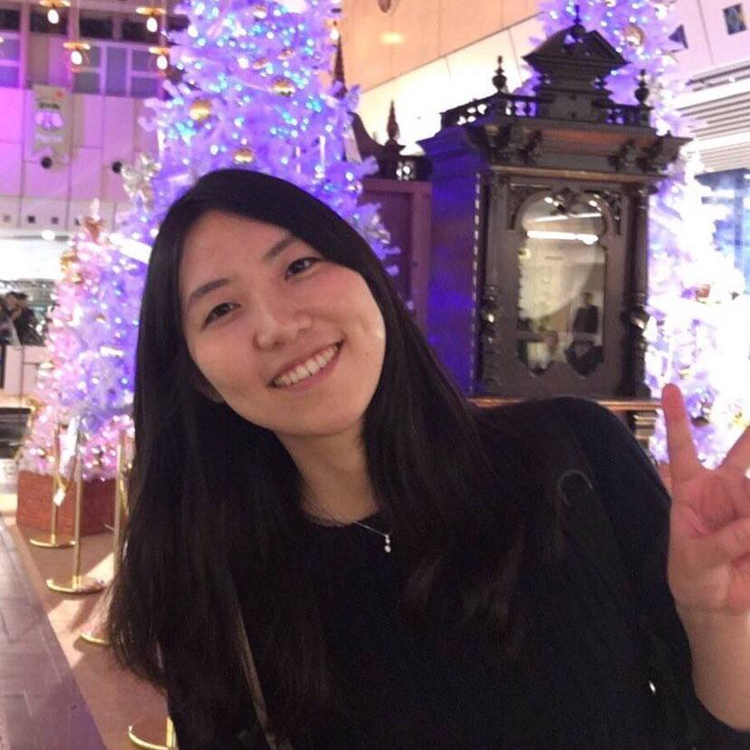
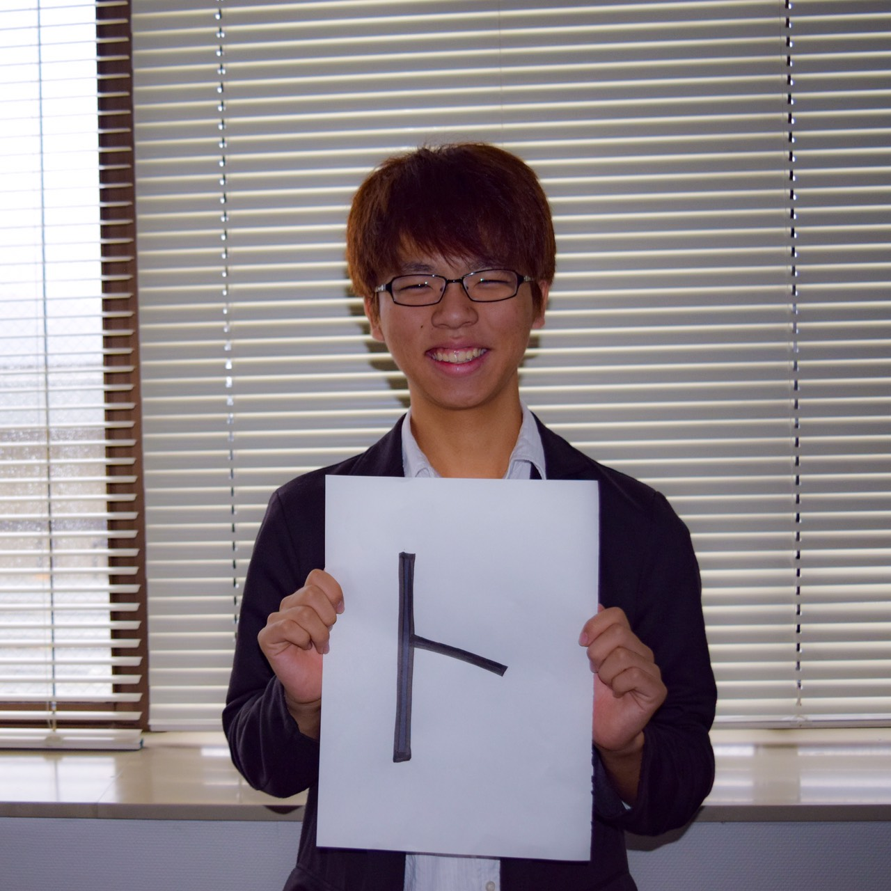

インタビュー

幸寺 玲奈
NPO法人Mielka副代表兼人事局長。
京都大学法学部3回生。
人が好きで、様々な地に足を運び現地の人と交流する。一次情報を自らで掴みに行き、その声を届けることに関しては彼女の右に出る者はいない。
−-−-−-Mielkaに入って変わったところはどんなことですか？
私がMielkaに入って変わったと思う点は、自分の可能性を信じられるようになったことです。Mielkaには、自分を知る機会と習慣、そして社会にアンテナを張る機会と習慣の両方を得られる環境がありました。この2つの機会が与えられ、習慣になることで、自分の可能性の大きさが内的にも外的にも広がっていくように思えたこと、それが私がMielkaで一番変わったと思えることです。
−-−-−-Mielkaのどういうところが変わった点につながったと思いますか？
Mielkaでは、自分がやってみたいと思ったことを誰に遠慮することもなく挑戦できる機会があります。例えば、誰かのために何かしたい、と思ったとしても、自分がどういう人間なのか、何にわくわくして、何が得意で不得意なのか、そういった自分自身のことがわからないと、取り組むべきことも見えてきませんし、何より「自分ならやれる」という感覚を得られません。そういったところはMielkaならではだと思いますね。
−-−-−-どうやって、自分自身を知ることができるのでしょうか？
そして、そうした挑戦を通じて、「どうしてそう思ったのか」を徹底的に聞かれます。そうした思考の反復作業や自分自身のプロジェクトへの向き合い方の傾向分析を経て、次第に自分という人間がどういう人間なのかわかってきます。これは、最初はかなりつらいことでもありますが、自分が冷静に見えてくると面白く、わくわくしてきます。そして、こうして自分を知ることは、自分にももっと出来ることがあるかもしれないという自分への自信につながります。
ーなるほど、他にもこれは良かったなと思うことはありますか？
もう一つ、Mielkaで教わったのは「何よりissueを大事にせよ」ということです。社会のために何かしたいと漠然と思ってまずは行動を始めること、それもとっても大事なことですが、そこにある問題意識が不明確なままに行動を起こすだけでは、実際に社会にインパクトを与えることは出来ません。そのため、プロジェクトをする際にも、そのプロジェクトが必要な理由を様々な観点から議論します。なので、Mielkaで活動すると普段から社会がどのように動いているのかにアンテナを張っている必要があるわけです。
−-−-−-最後に一言お願いします！
0から問題提起をし、プロジェクトを立てる。それを一緒にやってくれるメンバーがいる。そしてそんな活動に呼応してくれる人たちがいる。こんなに楽しいことはありません。と言いたいところですが、実はめちゃくちゃしんどい時もあります。ですが、やっぱり、そのしんどさ、必死さの先に味わう感覚は、見る景色は、病みつきです。だからやめられない。これが、この団体の怖いところですね。笑
インタビュー

田口 裕斗
NPO法人Mielka新歓隊長。
立命館大学法学部1回生。
高校生の頃から主権者教育で活動し、Mielkaでも教育事業で活躍中。様々な学生との交流の場に足を運ぶなどそのフットワークは無類の軽さを持つ。
−-−-−-Mielkaに入ろうと思った理由、きっかけはなんですか？
僕がMielkaに入った理由は、主権者教育をもっと広めたいと思ったからです。主権者教育には、高校時代に出会い、その面白さや大切さを痛感しました。高校時代に主権者教育に出会い、その面白さ・大切さを痛感し、さらに主権者教育を広めたいと思い、Mielkaに入りました。
−-−-−-主権者教育の面白さと大切さをそれぞれ教えてください！
面白さは、政策の表と裏を知れること。政策には、メリットだけでなく必ずデメリットもある。そのメリットデメリットに、優先順位をつけて候補者を選ぶプロセスが面白かったです。それに、もし自分が主権者教育を受けれていなかったら、今でも政策の両面を見ることは出来ずに、メディアの情報に流されていたと思うので、この気づきを得る機会の提供が大切だと思いました！
−-−-−-一回生ながら新歓隊長を引き受けた想いや、今後の意気込みなどあれば教えてください。
これから先、事業を拡大していくためには、多くの視点と仲間が必要です。そのためには多くの人とつながり、一緒に活動したい。そのために新歓隊長をやっています。
−-−-−-新歓隊長として、Mielkaにどういう今後一緒に仕事をしたい人、こういう人にMielkaに入って欲しいみたいなのはありますか？
「本当にこの方法がベストなのか？」と常に自分の活動に対して疑問を持ち、現状に満足しない人に入って欲しいです！また成長意欲が高く自分の成長と団体の成長を考えられる人がいいですね。
−-−-−-最後に、一言お願いします！
是非一度、見学にお越しください！Mielkaは、常にあなたの新鮮な発想と行動力を求めています。そして、僕たちと一緒に活動しましょう！